Information, NHST and model fit
This time:
- Model and parameter evaluation.
- How do we test our coefficients?
- How do we choose the best model?
- What sort of indexes can we use to evaluate fit?
NHST
Bayesians typically do not use “standard” NHST. Why?
There is no sampling distribution and thus no p-values
NHST is associated with tons of problems eg dichotomous thinking
Because we are interested in the posterior distribution, not a single point estimate
Model comparison is more elegant
Standard fit indices and tests
\(R^2\), AIC, BIC, likelihood ratio test (LRT). Here is a Bayesian \(R^2\) for happiness ~ group + school success (a whole distribution of them, one per posterior draw):
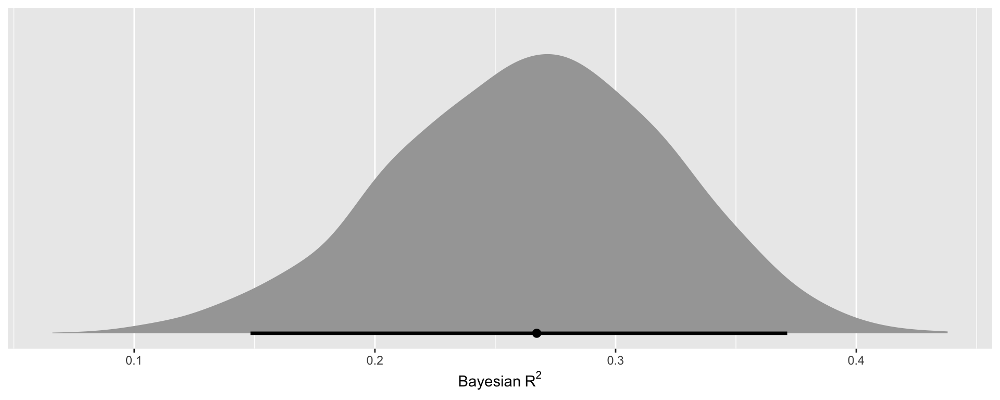
What is likelihood?
Model fit indexes like likelihood ratio test, AIC, BIC rely on likelihoods.
The likelihood is p(data | \(\theta\)), read the other way around: the data are treated as given and \(\theta\) varies. We write it L(\(\theta\) | data). It is not a probability distribution over \(\theta\) (it needn’t integrate to 1).
A likelihood function
Binomial likelihood L(\(\theta\) | S = 3, N = 10)
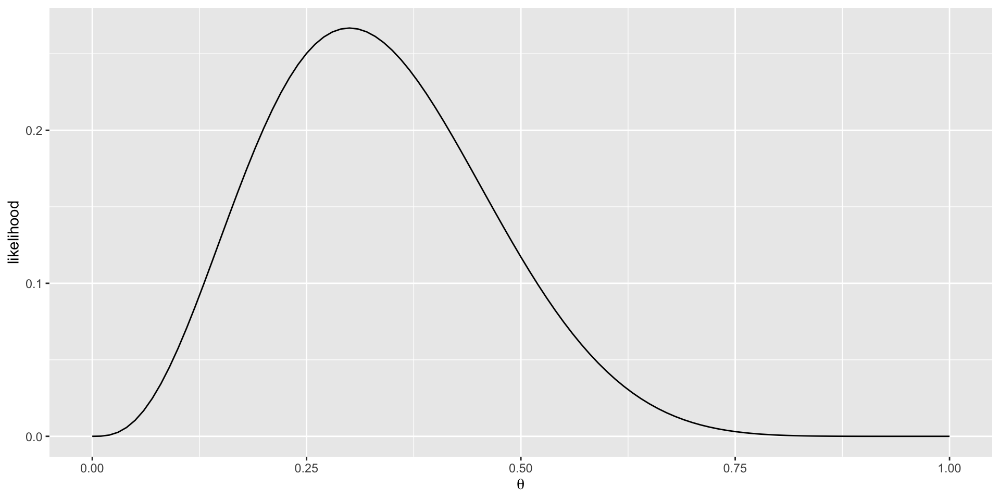
Log likelihood
The log of the likelihood is easier to work with (adding rather than multiplying small values). It will typically be negative, with higher values (closer to zero) indicating a better fitting model.
In frequentist estimation, the log likelihood is a single number, one that indicates the maximum, thus maximum likelihood estimation.
Log likelihood: intercept-only model
Code
Analysis of Deviance Table
Model 1: health ~ 1
Model 2: health ~ 1 + happy
Resid. Df Resid. Dev Df Deviance Pr(>Chi)
1 199 1596
2 198 1545 1 51.001 0.01057 *
---
Signif. codes: 0 '***' 0.001 '**' 0.01 '*' 0.05 '.' 0.1 ' ' 1Likelihood ratio test
If we multiply the difference in log-likelihood by -2, it follows a \(\chi^2\) distribution with 1 degrees of freedom.
\(LR = -2 \ln\left(\frac{L(m_1)}{L(m_2)}\right) = 2(\text{loglik}(m_2)-\text{loglik}(m_1))\)
with degrees of freedom = the difference in number of parameters (here 1).
LRT in R
Likelihood ratio test
Model 1: health ~ 1
Model 2: health ~ 1 + happy
#Df LogLik Df Chisq Pr(>Chisq)
1 2 -491.48
2 3 -488.23 1 6.4955 0.01081 *
---
Signif. codes: 0 '***' 0.001 '**' 0.01 '*' 0.05 '.' 0.1 ' ' 1Where is deviance coming in?
Residual deviance \(= 2\times(LL(\text{saturated model}) - LL(\text{proposed model}))\), where the saturated model has one parameter per data point.
For binary logistic regression the saturated model predicts every 0/1 perfectly, so its LL = 0 and deviance = −2LL. For a Gaussian model it isn’t 0, so −2LL and the deviance glm() prints differ (for Gaussian glm(), the residual deviance is just the residual sum of squares).
−2LL vs deviance
Call:
glm(formula = health ~ 1 + happy, data = data)
Coefficients:
Estimate Std. Error t value Pr(>|t|)
(Intercept) 7.6269 0.3982 19.151 <2e-16 ***
happy 0.3376 0.1321 2.557 0.0113 *
---
Signif. codes: 0 '***' 0.001 '**' 0.01 '*' 0.05 '.' 0.1 ' ' 1
(Dispersion parameter for gaussian family taken to be 7.802939)
Null deviance: 1596 on 199 degrees of freedom
Residual deviance: 1545 on 198 degrees of freedom
AIC: 982.47
Number of Fisher Scoring iterations: 2Grid approximation with likelihoods
Let’s use likelihood to estimate a model. We will use grid approximation to calculate plausible parameter values.
Code
# A tibble: 40,000 × 2
mu sigma
<dbl> <dbl>
1 66 2
2 66 2.01
3 66 2.01
4 66 2.02
5 66 2.02
6 66 2.03
7 66 2.03
8 66 2.04
9 66 2.04
10 66 2.05
# ℹ 39,990 more rowsComputing the likelihood
After defining the grid space we need to calculate the likelihood.
Likelihood of our data (each child’s height) assuming each part of our grid is true. So if we take the first line of our grid (mu = 66, sigma = 2) we can see how likely each child’s height (all 928) is with
dnorm(height, 66, 2)We sum the LLs across all 928 children for each spot in the grid to get the total log-likelihood for that grid spot
37 million calculations
40,000 grid points * 928 participants = 37,120,000 calculations
Code
# A tibble: 40,000 × 3
mu sigma log_likelihood
<dbl> <dbl> <dbl>
1 66 2 -2737.
2 66 2.01 -2733.
3 66 2.01 -2729.
4 66 2.02 -2725.
5 66 2.02 -2721.
6 66 2.03 -2718.
7 66 2.03 -2714.
8 66 2.04 -2710.
9 66 2.04 -2707.
10 66 2.05 -2703.
# ℹ 39,990 more rowsThe log-likelihood surface
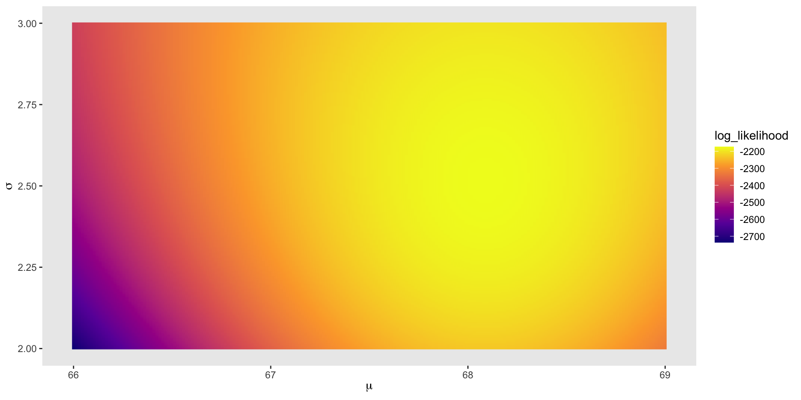
Log-likelihood for \(\mu\)
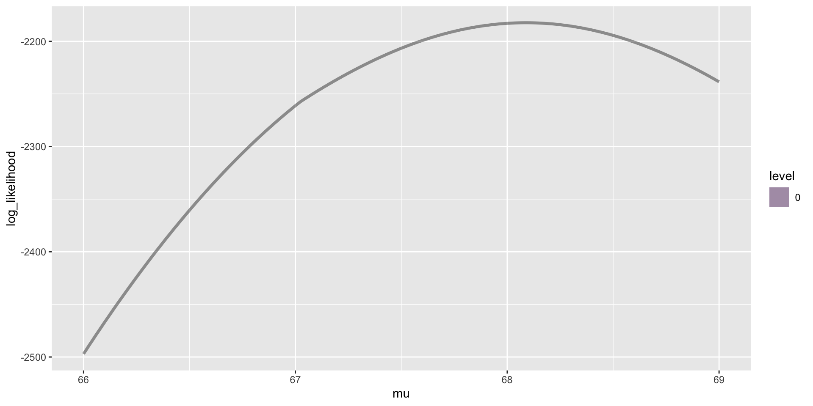
Leveraging likelihoods
We don’t use grid approximation to calculate our posterior, but the LLs are super helpful to evaluate our model.
However, this being bayes, we are going to work with something slightly different from what LLs we are used to.
In doing so we accomplish: 1. a principled way to choose likelihood function and 2. a way to evaluate models
Information theory
Ideally we want to learn something new, gain some additional information about the world. But how do you quantify learning or information? p-value?
First step is to define what it means to be accurate in our predictions–cannot learn if we don’t have some criterion. Above we defined accuracy as the log probability of the data.
Second step is to define what a perfect prediction would look like, and thus how much uncertainty we are dealing with. While the log probability of the data defines what parameter is most “accurate”, it does not tell us how much we are learning.
Information theory (cont.)
The reduction in uncertainty by learning the outcome is how much information we have learned. If we know how much uncertainty we have we can know how much improvement is possible in our prediction.
Claude Shannon (1916-2001) developed the field of information theory by making an analogy to bits of information (yes, the computer bit). Prior to this, information, and thus learning was poorly defined.
What is information?
The basic intuition behind information theory is that learning that an unlikely event has occurred is more informative than learning that a likely event has occurred. Unlikely = informative.
information(x) = −log2(p(x)), where log2() is the base-2 logarithm and p(x) is the probability of the event x. Units are bits, where 1 bit halves the possibilities.
Bits
- Bits of information are the minimum number of questions required to determine an unknown. Bits effectively chop down the possible outcomes by a factor of 2^bit.
A dice roll is 2.585 bits. Best to think about this is each bit like a yes/no question that halves the possibilities. 1. even? 2. greater than 3?
- ~Half the time you can logically deduce with 2 questions (2 bits), but sometimes you need 3 questions, hence ~2.5 bits of info.
Bits and probabilities
1/2^bit = probability of some event
2^bit = 1/p
bit = log2(1/p)
bit = −log2(p)
We use bits rather than direct probabilities because it is easier to add bits than very small probabilities multiplied by other very small probabilities.
Entropy
Calculating the information for a random variable is the same as calculating the information for the probability distribution of the events for the random variable. This is called entropy.
Flatter distributions will have higher entropy. Because all values are equally likely any one value is “surprising” and gives you more information compared to a peaked distribution.
A peaked distribution is less surprising as it already contains a lot of information.
Entropy (cont.)
Distributions with more possibilities will be higher in entropy than those with fewer possibilities.
Similarly, flat distributions have high entropy as they provide little information
This is similar to how we set up priors where if we had more background “information” we would create a more narrow distribution.
Maximum information entropy
We can use information theory to help us pick our likelihood distributions! Given what you know, what is the distribution that can arise the most ways with our data?
Maximizing information entropy yields the flattest distribution given your constraints. Each common distribution is the maximum entropy distribution for some set of constraints: Gaussian when all we know is the mean and variance; uniform when all we know is the range; binomial for counts of two outcomes with a constant probability; exponential for a positive quantity with a known mean.
If nothing is known about a distribution (except measurement), then the distribution with the largest entropy should be chosen as the least-informative default.
Why the least informative?
Why the least informative?
First, maximizing entropy minimizes the amount of prior information built into the distribution.
Second, many physical systems tend to move towards maximal entropy configurations over time. Don’t fight nature!
Entropy, formally
Entropy, H(p), tells us how hard it is to make an accurate prediction. For non-uniform distributions we take a probability-weighted sum of the log probabilities
H(p) = \(-\sum p_ilog(p_i)\)
Think of tossing rocks into 10 buckets. Each bucket can have a probability associated with getting a rock. H(p) is maximized when the ps are equal. That is the distribution that can arise the most ways
Pebbles in buckets
Code
d <-
tibble(a = c(0, 0, 10, 0, 0),
b = c(0, 1, 8, 1, 0),
c = c(0, 2, 6, 2, 0),
d = c(1, 2, 4, 2, 1),
e = 2)
d %>%
mutate(bucket = 1:5) %>%
pivot_longer(-bucket, names_to = "letter", values_to = "pebbles") %>%
ggplot(aes(x = bucket, y = pebbles)) +
geom_col(width = 1/5) +
geom_text(aes(y = pebbles + 1, label = pebbles)) +
geom_text(data = tibble(
letter = letters[1:5],
bucket = 5.5,
pebbles = 10,
label = str_c(c(1, 90, 1260, 37800, 113400),
rep(c(" way", " ways"), times = c(1, 4)))),
aes(label = label), hjust = 1) +
scale_y_continuous(breaks = c(0, 5, 10)) +
facet_wrap(~letter, ncol = 2)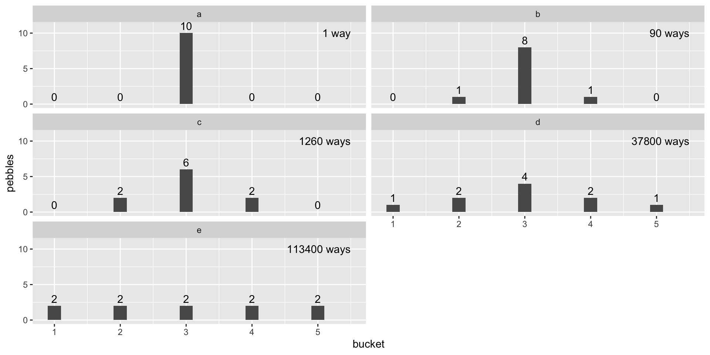
Maximum entropy and likelihoods
If all we are willing to assume about a collection of measurements is that they have a finite variance, then the Gaussian distribution represents the most conservative probability distribution to assign to those measurements.
With different assumptions, provided our assumptions are good ones, the principle of maximum entropy leads to distributions other than the Gaussian
Assumptions about your DGP should specify your likelihood function. NOT YOUR OBSERVED DISTRIBUTION OF DATA.
KL divergence
- But how far away is our model from an accurate prediction? Divergence (not deviance) (often called Kullback–Leibler (KL) divergence) is the uncertainty created by using probabilities from one distribution to describe another target distribution.
\(D_{KL}(p, q) = \sum_i p_i(\log(p_i) - \log(q_i))\)
where \(p\) is the true (target) distribution and \(q\) is our model. It is the average difference in log probability between the truth and the model, weighted by the truth. It is 0 when \(q = p\) and positive otherwise.
KL divergence is foundational in many statistical and computational areas. If you take any machine learning class you will use KL divergence
Deviance
- Often we do not know the target. This means we cannot look at a divergence and know if it is good or bad, but we can use them to compare different models. Throw a -2 infront of it and call it a deviance (remember this?).
\(D(q) = -2 \sum_i \log(q_i)\)
How is this different from LRT?
Deviance is a measure of relative fit: the unknown truth’s term is the same constant for every model fit to the same data, so it cancels when we compare models.
Comparing two models with LRT should yield similar scores as comparing two deviances.
But Bayesians don’t like NHST, so they sometimes leave off the −2, which only serves to make differences chi-square distributed.
Log Pointwise Predictive Density
\[\text{lppd} = \sum_{i=1}^n \log \int p(y_i | \theta)\, p(\theta | y)\, d\theta \approx \sum_{i=1}^n \log \left(\frac{1}{S}\sum_{s=1}^S p(y_i | \theta_s)\right)\]
In words: for each observation, average its likelihood over the \(S\) posterior draws, take the log, then sum over observations.
Further, with Bayes we need to use the entire posterior to define deviance! If not, we are throwing away information.
Often called the log pointwise predictive density (lpd or lppd)
We just went full circle to get a bayesian equivalent to log likelihood. And will thus use lppd for our model fit questions.
Two options for model comparison
- Cross validation
- Information model fit indexes
- These are often treated as very different, but they estimate the same thing: how well the model will predict new data. AIC, WAIC and LOO are approximations to (leave-one-out) cross validation.
Cross validation
Compare different models in their prediction in and out of sample (train and a test sample)
Predictions to NEW DATA are key, as this separates the sample specific influence (irregular features) from population influence (regular features)
Identify the model with the lowest test set error (deviance). In frequentist we typically use MSE.
But a single hold-out sample wastes data, so we split the data into k folds, fit k times, and let each fold be the test set once.
LOO & PSIS-LOO
Leaving out 1 observation per fold is called leave-one-out (LOO) cross validation. Great in theory, but computationally difficult.
Pareto Smoothed Importance Sampling (PSIS). Importance is similar to “deleted residuals” where on a case by case basis we asked whether this data point impacts the posterior. Instead of rerunning your model N data points times, importance scores are used to weight each datapoint, resulting in an equivalent to LOO without actually doing LOO. Cross validation for free!
PSIS-LOO example: mr.12
Family: gaussian
Links: mu = identity
Formula: happiness ~ 0 + iv.d + SS_c
Data: MR (Number of observations: 118)
Draws: 4 chains, each with iter = 2000; warmup = 1000; thin = 1;
total post-warmup draws = 4000
Regression Coefficients:
Estimate Est.Error l-95% CI u-95% CI Rhat Bulk_ESS Tail_ESS
iv.dcontrol 4.96 0.25 4.46 5.46 1.00 4892 3081
iv.dtx 5.36 0.19 4.99 5.73 1.00 4328 2930
SS_c 0.29 0.05 0.20 0.38 1.00 4780 2934
Further Distributional Parameters:
Estimate Est.Error l-95% CI u-95% CI Rhat Bulk_ESS Tail_ESS
sigma 1.64 0.11 1.44 1.87 1.00 4369 3196
Draws were sampled using sample(hmc). For each parameter, Bulk_ESS
and Tail_ESS are effective sample size measures, and Rhat is the potential
scale reduction factor on split chains (at convergence, Rhat = 1).Adding LOO to a model
Computed from 4000 by 118 log-likelihood matrix.
Estimate SE
elpd_loo -228.1 6.9
p_loo 4.0 0.6
looic 456.2 13.7
------
MCSE of elpd_loo is 0.0.
MCSE and ESS estimates assume MCMC draws (r_eff in [0.8, 1.3]).
All Pareto k estimates are good (k < 0.7).
See help('pareto-k-diagnostic') for details.Reading the LOO output
elpd_loo: the expected log pointwise predictive density for new data (an out-of-sample lppd). Larger is better. Probabilities are always equal or less than 1, and thus log predictive probabilities are 0 or negative
p_loo is the effective number of parameters
looic is -2(elpd). Low scores better. Why -2? Because of chi-square history and/or for Gaussian model with known variance -2 log score is equal to squared error.
Pareto k: can we trust PSIS-LOO?
- PSIS estimates what would happen if each observation were left out. That works when leaving out one point barely changes the posterior.
- Each observation gets a Pareto k: how badly the shortcut is strained for that point. k < 0.7 is fine. k > 0.7 means that observation is so influential that the shortcut is unreliable (and so is the elpd for that model).
Pareto k for every observation
All of mr.12’s k values sit well below the 0.7 line, so we can trust its LOO estimate.
Code
tibble(k = mr.12$criteria$loo$diagnostics$pareto_k) %>%
mutate(observation = row_number()) %>%
ggplot(aes(x = observation, y = k)) +
geom_hline(yintercept = 0.7, linetype = "dashed", colour = "firebrick") +
annotate("text", x = 1, y = 0.74, label = "k = 0.7: trouble above here", hjust = 0, colour = "firebrick") +
geom_point(alpha = .6) +
labs(x = "Observation", y = "Pareto k") +
theme_classic(base_size = 14)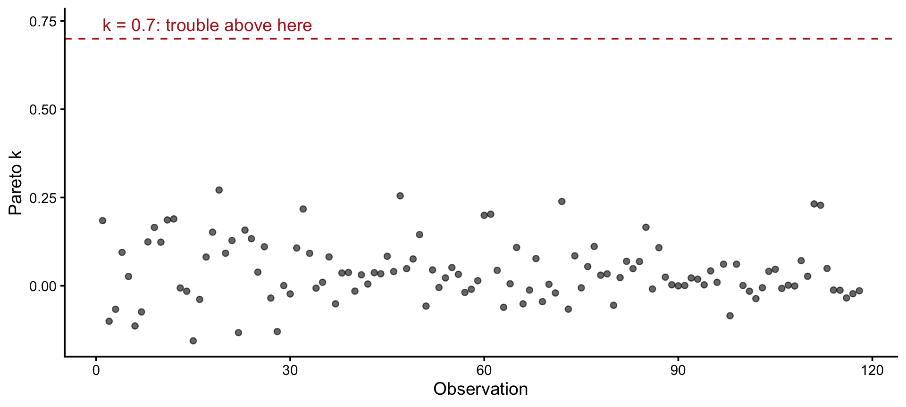
What if some k are too high?
High k usually means an outlier or a model that is too flexible for its data (e.g., one parameter per person). Options, from cheapest to most expensive:
# 1. moment matching: adjusts the draws for the bad points (needs save_pars(all = TRUE) when fitting)
model <- add_criterion(model, "loo", moment_match = TRUE)
# 2. actually refit without each bad point (fine if there are only a few)
model <- add_criterion(model, "loo", reloo = TRUE)
# 3. K-fold cross validation: refit K times (e.g., 10), no shortcut at all
model <- add_criterion(model, "kfold", K = 10)And look at those observations! A high k is also a model check: the model is surprised by them.
A second model: mr.11
Family: gaussian
Links: mu = identity
Formula: happiness ~ 1 + (1 | iv)
Data: MR (Number of observations: 118)
Draws: 4 chains, each with iter = 2000; warmup = 1000; thin = 1;
total post-warmup draws = 4000
Multilevel Hyperparameters:
~iv (Number of levels: 3)
Estimate Est.Error l-95% CI u-95% CI Rhat Bulk_ESS Tail_ESS
sd(Intercept) 0.48 0.53 0.01 2.01 1.01 512 418
Regression Coefficients:
Estimate Est.Error l-95% CI u-95% CI Rhat Bulk_ESS Tail_ESS
Intercept 5.20 0.35 4.37 5.96 1.02 413 168
Further Distributional Parameters:
Estimate Est.Error l-95% CI u-95% CI Rhat Bulk_ESS Tail_ESS
sigma 1.90 0.12 1.68 2.17 1.00 2357 2185
Draws were sampled using sample(hmc). For each parameter, Bulk_ESS
and Tail_ESS are effective sample size measures, and Rhat is the potential
scale reduction factor on split chains (at convergence, Rhat = 1).LOO for mr.11
Computed from 4000 by 118 log-likelihood matrix.
Estimate SE
elpd_loo -245.1 8.3
p_loo 3.1 0.5
looic 490.1 16.7
------
MCSE of elpd_loo is 0.0.
MCSE and ESS estimates assume MCMC draws (r_eff in [0.5, 1.0]).
All Pareto k estimates are good (k < 0.7).
See help('pareto-k-diagnostic') for details.Comparing models with loo_compare()
- loo_compare output rank orders models such that the best fitting model appears on top
How big a difference matters?
model elpd_diff se_diff p_worse diag_diff diag_elpd
mr.12 0.0 0.0 NA
mr.11 -17.0 6.3 1.00 - The Stan team recommends that:
- If |elpd_diff| < 4, the models predict about equally well.
- If it’s larger, compare it to se_diff (a rough signal-to-noise ratio).
- Here elpd_diff / se_diff = 17 / 6.3 ≈ 2.7:
mr.12is expected to predict new data clearly better.
A third model: add the interaction
Code
mr.14b <-
brm(family = gaussian,
happiness ~ 1 + iv.d * SS_c,
prior = c(prior(normal(5, 2), class = Intercept),
prior(normal(0, 1), class = b),
prior(exponential(1), class = sigma)),
iter = 2000, warmup = 1000, chains = 4, cores = 4,
data = MR,
backend = "cmdstanr",
file = "mr.14b")
mr.14b <- add_criterion(mr.14b, "loo")\[ \begin{aligned} \text{happiness}_i &\sim \text{Normal}(\mu_i, \sigma) \\ \mu_i &= b_0 + b_1\,\text{tx}_i + b_2\,\text{SS}_i + b_3\,\text{tx}_i \times \text{SS}_i \\ b_0 &\sim \text{Normal}(5, 2) \qquad b_1, b_2, b_3 \sim \text{Normal}(0, 1) \qquad \sigma \sim \text{Exponential}(1) \end{aligned} \]
R² always goes up. Does LOO?
Code
mods <- list(`mr.11: happiness ~ (1 | group)` = mr.11,
`mr.12: ~ tx + school` = mr.12,
`mr.14b: ~ tx * school` = mr.14b)
tibble(model = names(mods),
R2 = map_dbl(mods, ~ median(bayes_R2(.x, summary = FALSE))),
elpd_loo = map_dbl(mods, ~ .x$criteria$loo$estimates["elpd_loo", "Estimate"]),
p_loo = map_dbl(mods, ~ .x$criteria$loo$estimates["p_loo", "Estimate"])) %>%
knitr::kable(digits = 2)| model | R2 | elpd_loo | p_loo |
|---|---|---|---|
| mr.11: happiness ~ (1 | group) | 0.01 | -245.07 | 3.12 |
| mr.12: ~ tx + school | 0.27 | -228.12 | 4.04 |
| mr.14b: ~ tx * school | 0.32 | -224.45 | 5.02 |
model elpd_diff se_diff p_worse diag_diff diag_elpd
mr.14b 0.0 0.0 NA
mr.12 -3.7 3.4 0.86 |elpd_diff| < 4
mr.11 -20.6 7.3 1.00 Reading the comparison
- In-sample \(R^2\) rewards every added parameter. LOO only rewards parameters that help predict new data.
- Here the interaction raises \(R^2\) from .27 to .32, but its LOO advantage over
mr.12(3.7, se 3.4) is under 4: a modest gain in prediction, not a clear one. (Whether the interaction is real is a different question; see the next section.)
Information Criteria
AIC, BIC, WAIC, DIC, etc.
Information criteria are theoretical approximations to out-of-sample (cross-validation) fit, like PSIS-LOO
AIC = deviance(training) + 2p (p = number of parameters). Lower is better.
DIC (Deviance information criteria) is more flexible for Bayesian models, but assumes a multivariate Gaussian posterior
WAIC
\[\text{WAIC}(y, \theta) = -2 \big (\text{lppd} - \underbrace{\sum_i \operatorname{var}_\theta \log p(y_i | \theta)}_\text{penalty term} \big)\]
lppd = log pointwise predictive density = deviance over the entire posterior
Similar in form to old friend: \[\text{AIC} = -2 \log p(y | \hat\theta_{MLE}) + 2p\]
WAIC example
Computed from 4000 by 118 log-likelihood matrix.
Estimate SE
elpd_waic -228.1 6.9
p_waic 4.0 0.6
waic 456.2 13.7p_waic = penalty term (similar to the 2p in AIC); elpd_waic = lppd − p_waic
WAIC for mr.11
Comparing with WAIC
Code
model elpd_diff se_diff p_worse diag_diff diag_elpd
mr.12 0.0 0.0 NA
mr.11 -17.0 6.3 1.00 Note: this looks like the LOO results, even though this is with waic. Both are computed from the lppd, so it makes sense they can be similar. It will not always be this way, however.
Using information criteria
Each of these criteria do not have scales that are bounded by numbers (eg 0-1), nor can they be evaluated by some other number (eg SDs)
Provide relative fit, so you need to compare different models, choosing the model with best fit
The criteria depend on the data, so you can only compare models fit to exactly the same observations (watch out for missing data dropping different rows)
You can compare non-nested models e.g. ones with non-overlapping sets of predictors
Mimicking NHST
If you wanted to appease an editor/reviewer/adviser what do you do (other than teach them Bayes)?
CIs! Predictions! Model comparisons with waic or loo! ROPE! Probability of direction! Bayes Factors!
Running example: mr.14b
Happiness predicted by treatment (vs. control) × school success (centered), the model we just fit. iv.dtx is the treatment − control difference at average school success.
Family: gaussian
Links: mu = identity
Formula: happiness ~ 1 + iv.d * SS_c
Data: MR (Number of observations: 118)
Draws: 4 chains, each with iter = 2000; warmup = 1000; thin = 1;
total post-warmup draws = 4000
Regression Coefficients:
Estimate Est.Error l-95% CI u-95% CI Rhat Bulk_ESS Tail_ESS
Intercept 4.98 0.23 4.52 5.43 1.00 4549 2903
iv.dtx 0.36 0.29 -0.21 0.92 1.00 4899 2700
SS_c 0.40 0.06 0.29 0.52 1.00 3383 2873
iv.dtx:SS_c -0.28 0.09 -0.46 -0.09 1.00 3658 3007
Further Distributional Parameters:
Estimate Est.Error l-95% CI u-95% CI Rhat Bulk_ESS Tail_ESS
sigma 1.58 0.10 1.40 1.80 1.00 4117 2635
Draws were sampled using sample(hmc). For each parameter, Bulk_ESS
and Tail_ESS are effective sample size measures, and Rhat is the potential
scale reduction factor on split chains (at convergence, Rhat = 1).Probability of direction
The Probability of Direction (pd) is an index of effect existence representing the certainty with which an effect goes in a particular direction.
- Simple: depends only on the posterior (unlike, say, Bayes factors)
- Scale independent: interpretation doesn’t change if you rescale the variable
- Similar to a p-value: roughly, two-sided p ≈ 2 × (1 − pd), so it helps convince pesky reviewers
Posteriors for mr.14b
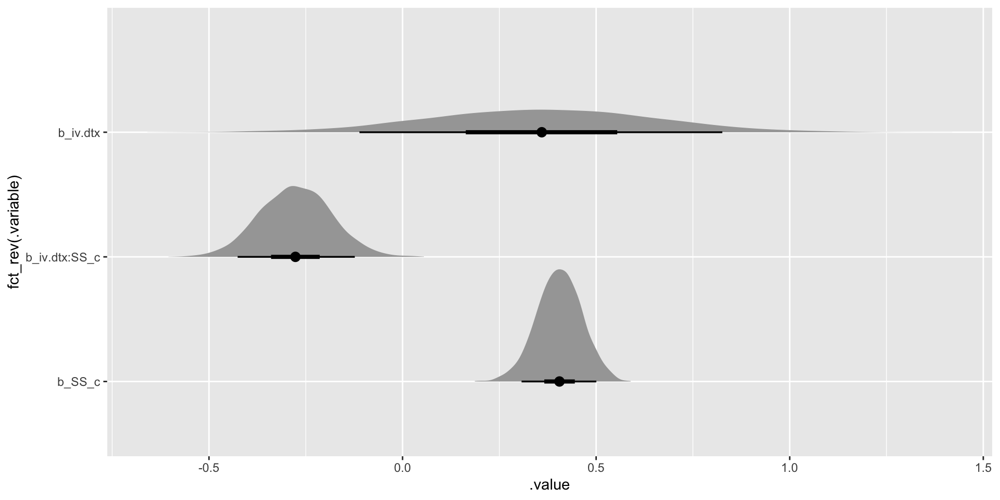
How to calculate?
pd is the share of the posterior on the same side of 0 as the median (so it runs from 50% to 100%). The rest is the area on the other side of 0.
pd by hand
It’s just a proportion of draws, same as everything else we’ve done with posteriors:
# A tibble: 1 × 3
prob_positive prob_negative pd
<dbl> <dbl> <dbl>
1 0.893 0.107 0.893About 89% of the posterior says the treatment helps (at average school success). Suggestive, not conclusive: roughly a two-sided p ≈ .21.
describe_posterior()
Summary of Posterior Distribution
Parameter | Median | 95% CI | pd | ROPE | % in ROPE
--------------------------------------------------------------------------
(Intercept) | 4.98 | [ 4.52, 5.43] | 100% | [-0.19, 0.19] | 0%
iv.dtx | 0.36 | [-0.21, 0.92] | 89.33% | [-0.19, 0.19] | 26.68%
SS_c | 0.41 | [ 0.29, 0.52] | 100% | [-0.19, 0.19] | 0%
iv.dtx:SS_c | -0.28 | [-0.46, -0.09] | 99.72% | [-0.19, 0.19] | 15.00%
Parameter | Rhat | ESS (tail)
--------------------------------
(Intercept) | 1.000 | 2903
iv.dtx | 1.001 | 2700
SS_c | 1.000 | 2873
iv.dtx:SS_c | 1.000 | 3007Downsides of PD
You can find a high PD for an effect that is quite small. Similar to a p < .05 with a large sample size. Is it still meaningful?
Leads to other NHST foibles like dichotomous thinking
More similar to a 1-tailed p-value if you keep alpha = .05. So maybe look at 97.5 PDs?
The nil hypothesis
With NHST you typically attempt to reject a H0 of zero. This is a point estimate. However, we know the probability of any point is zero, so conceptually a typical NHST is illogical.
What we really mean when we set up a standard NHST nil hypothesis is to reject zero – OR VALUES THAT ARE EQUIVALENT TO ZERO.
What are those values? In frequentist it depends on your se which is a function of your sample SD and N. We just don’t talk/think about it.
ROPE
Rather than concluding that an effect is present when it simply differs from zero, we ask how probable it is that the effect lies outside a range that counts as “practically no effect”.
Region of Practical Equivalence - a small range of parameter values that are considered to be practically equivalent to the null. E.g,. std b = [-.07, .07]
Let the user define an area around the null value enclosing values that are equivalent to the null
Using a ROPE
Compare our 95% (or whatever value you want) CI/HDPI to see if it overlaps with the ROPE. Some suggest using full posterior rather than a CI.
If this percentage is sufficiently low, the null hypothesis is rejected. If this percentage is sufficiently high, the null hypothesis is accepted.
Note: rejecting the ROPE means rejecting all practically-null values, not just exactly 0.
A ROPE you can defend
- Happiness is on a 1–10 scale with SD ≈ 1.9.
- Say we decide that a treatment effect smaller than 0.2 points (about 0.1 SD, a fifth of one scale point) is too small to matter to anyone deciding whether to run the program. That’s our ROPE: [−0.2, 0.2].
- Write the reason down before you look at the posterior, in the units of the outcome. “The default” is not a reason.
The same with rope()
parameters picks out the one parameter the ROPE was built for; ci = 1 uses the full posterior.
# Proportion of samples inside the ROPE [-0.20, 0.20]:
Parameter | Inside ROPE
-----------------------
iv.dtx | 26.88 %About 27% of the posterior is practically zero and about 70% is a meaningful benefit. We can’t call it either “no effect” or “an effect” with confidence; we need more data.
A publication-ready posterior
Code
# for a paper: add ggsave("tx-posterior.png", width = 6.5, height = 3.5) after the plot
tx_sum <- tx_draws %>%
summarise(med = median(b_iv.dtx), lo = quantile(b_iv.dtx, .025), hi = quantile(b_iv.dtx, .975),
pd = mean(b_iv.dtx > 0), rope = mean(abs(b_iv.dtx) < 0.2))
ggplot(tx_draws, aes(x = b_iv.dtx)) +
annotate("rect", xmin = -0.2, xmax = 0.2, ymin = -Inf, ymax = Inf, fill = "grey88") +
annotate("text", x = 0, y = 0.97, label = "ROPE", vjust = 1, colour = "grey40") +
stat_halfeye(.width = .95, point_interval = median_qi, fill = "#4C78A8", alpha = .8) +
geom_vline(xintercept = 0, linetype = "dashed") +
scale_y_continuous(NULL, breaks = NULL) +
labs(x = "Treatment − control difference in happiness (1–10 scale), at average school success",
caption = sprintf("Median = %.2f, 95%% CI [%.2f, %.2f]; pd = %.0f%%; %.0f%% of the posterior inside the ROPE [−0.2, 0.2].",
tx_sum$med, tx_sum$lo, tx_sum$hi, 100 * tx_sum$pd, 100 * tx_sum$rope)) +
theme_classic(base_size = 13) +
theme(plot.caption = element_text(hjust = 0))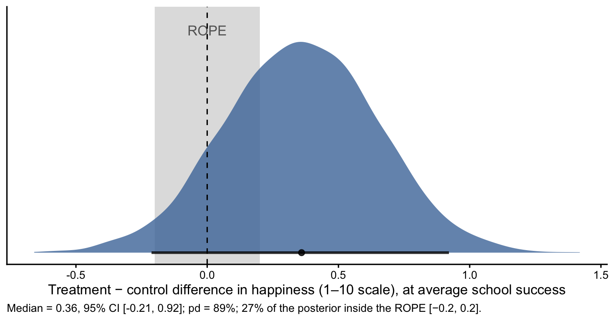
One ROPE for everything?
# Proportion of samples inside the ROPE [-0.20, 0.20]:
Parameter | Inside ROPE
-------------------------
Intercept | 0.00 %
iv.dtx | 28.29 %
SS_c | 0.00 %
iv.dtx:SS_c | 18.45 %- Note how the ROPE is the same for all parameters (including the intercept!), even though they are on different scales
Plotting the ROPE
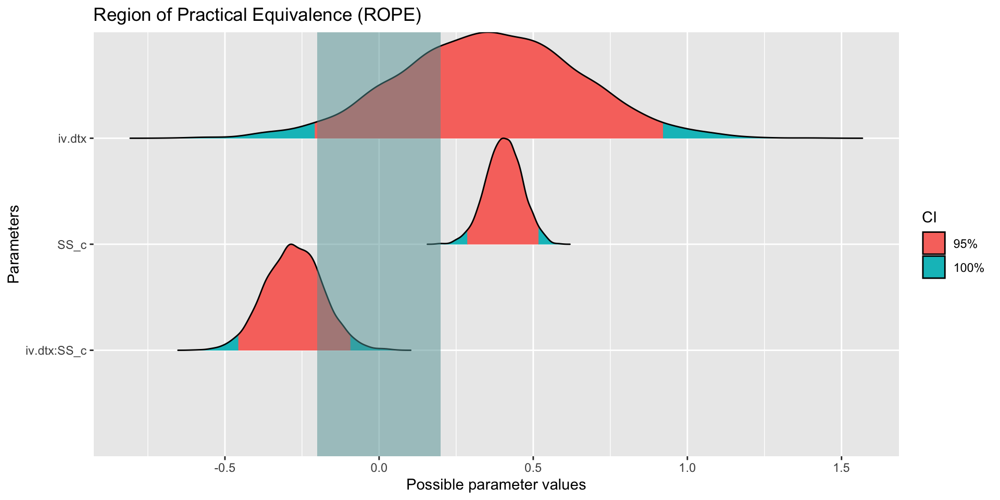
A wider ROPE, 99% interval
Plotting the wider ROPE
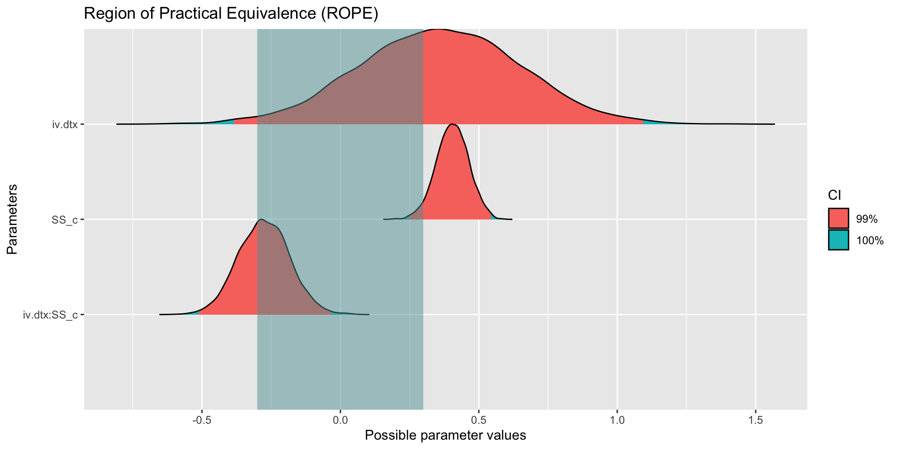
Equivalence test
# Test for Practical Equivalence
ROPE: [-0.30 0.30]
Parameter | H0 | inside ROPE | 95% ETI
------------------------------------------------------
Intercept | Rejected | 0.00 % | [4.52, 5.43]
iv.dtx | Undecided | 41.58 % | [-0.21, 0.92]
SS_c | Undecided | 1.45 % | [0.29, 0.52]
iv.dtx:SS_c | Undecided | 61.08 % | [-0.46, -0.09]Why a ROPE?
Why not just use the CI like you normally would? Because what if CI and ROPE overlap?
This allows you to
have a middle ground between accept vs reject. A range of equivalence.
Affirm a predicted value, which is logically impossible in standard NHST. That is, rather than “fail to reject the null,” we can say that, given the data, the effect has an XX% probability of being practically zero.
Choosing ROPE values
How to come up with ROPE values?
Difficult. Balance practicality with expertise judgment. DBDA: −0.1 to 0.1 of a standardized parameter (i.e., a negligible effect size, Cohen, 1988). bayestestR’s default for linear models is ±0.1 × SD(y)
- Usually implemented when a decision needs to be made. More common in medicine than psych.
The default ROPE
describe_posterior() with a ROPE
Summary of Posterior Distribution
Parameter | Median | 95% CI | ROPE | % in ROPE | Rhat | ESS (tail)
--------------------------------------------------------------------------------------
(Intercept) | 4.98 | [ 4.52, 5.43] | [-0.19, 0.19] | 0% | 1.000 | 2903
iv.dtx | 0.36 | [-0.21, 0.92] | [-0.19, 0.19] | 26.68% | 1.001 | 2700
SS_c | 0.41 | [ 0.29, 0.52] | [-0.19, 0.19] | 0% | 1.000 | 2873
iv.dtx:SS_c | -0.28 | [-0.46, -0.09] | [-0.19, 0.19] | 15.00% | 1.000 | 3007Bayes Factors
Quantifies the support in the data for two competing models: the ratio of the marginal likelihoods of the observed data under each. E.g., how much more likely are our data if b ≠ 0 (with some prior) than if b = 0? It gives the relative evidence for two positions.
\[BF_{12} = \frac{p(D | m = 1)}{p(D | m = 2)}\]
BF as an updating factor
Can also think of it as the factor by which some prior odds have been updated after observing the data to posterior odds. So it can be computed by dividing posterior odds by prior odds.
\[BF_{12}=\frac{Posterior~Odds_{12}}{Prior~Odds_{12}}\]
A toy example
Code
Bayes Factor (Savage-Dickey density ratio)
BF
----
1.94
* Evidence Against The Null: 0Prior vs posterior at 0

Reading the BF
Bayes Factor (Savage-Dickey density ratio)
BF
----
1.94
* Evidence Against The Null: 0The prior density at 0 is about .40 and the posterior density at 0 is about .21, so BF ≈ .40 / .21 ≈ 1.9: the data are about twice as likely under “there is an effect” (with this prior) as under “the effect is exactly 0”.
Proposed cutoffs
| BF10 | Interpretation |
|---|---|
| > 100 | Extreme evidence for H1 |
| 30 - 100 | Very strong evidence for H1 |
| 10 - 30 | Strong evidence for H1 |
| 3 - 10 | Moderate evidence for H1 |
| 1 - 3 | Anecdotal evidence for H1 |
| 1 | Equal evidence for H1 and H0 |
| 1/3 - 1 | Anecdotal evidence for H0 |
| 1/10 - 1/3 | Moderate evidence for H0 |
| 1/30 - 1/10 | Strong evidence for H0 |
| 1/100 - 1/30 | Very strong evidence for H0 |
| < 1/100 | Extreme evidence for H0 |
BF interpretation
Extent to which the data sway our relative belief from one hypothesis to the other
Strength of evidence from data about the hypotheses
Relative predictive accuracy of one hypothesis over another
Has the null hypothesis of an absence of an effect become more or less credible?
Interpreting a BF
Association with p values
Similar in that they both provide a continuous metric to compare two hypotheses
For a fixed sample size, p-values can be directly transformed into Bayes-Factors and vice versa, and of course into any effect size metric.
Remember that p values are a composite of an effect size and sample size. Same is true with BF.
Alternative to p-values
Easier interpretation. (ratio of two likelihoods). P values are misunderstood.
Doesn’t involve imaginary sampling distributions
Can provide evidence in favor of a null
Works better as an effect size substitute than a p-value
Less dichotomous thinking as there isn’t a BF one needs to surpass
One major downside
For every parameter or model test there are infinitely many Bayes factors, one for each prior. That is, there is no single Bayes factor for your analysis!
When someone says the Bayes factor for this test was XX you have to ask yourself what exactly they are testing.
A wider prior
What happens if we increase our prior SD? Going from 1 to 5? Is our BF going to increase or decrease?
Code
Bayes Factor (Savage-Dickey density ratio)
BF
-----
0.389
* Evidence Against The Null: 0The wider prior, plotted
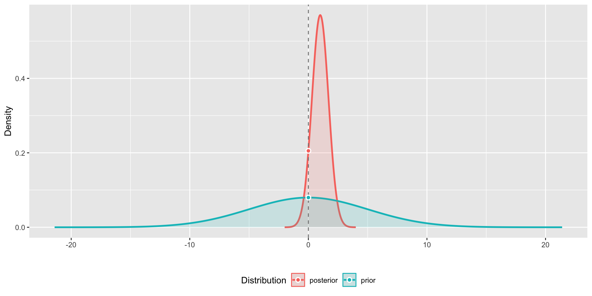
The original, for comparison
Here was the original BF
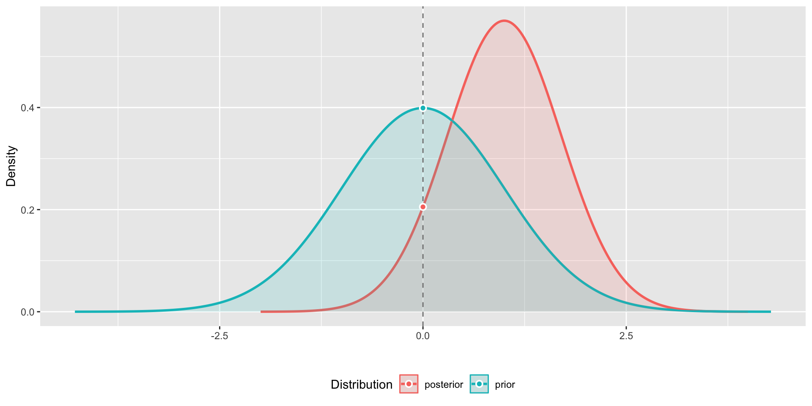
Same data, different BF
Bayes Factor (Savage-Dickey density ratio)
BF
-----
0.389
* Evidence Against The Null: 0This now suggests anecdotal evidence for H0, whereas before it was anecdotal evidence for H1 (BF ≈ 1.9). The posterior didn’t change at all; only the prior did.
A best-guess prior
What happens if our prior is a best guess rather than a regularizing prior?
Code
Bayes Factor (Savage-Dickey density ratio)
BF
-----
0.945
* Evidence Against The Null: 0BF ≈ 1: “equal evidence for H1 and H0”
The best-guess prior, plotted
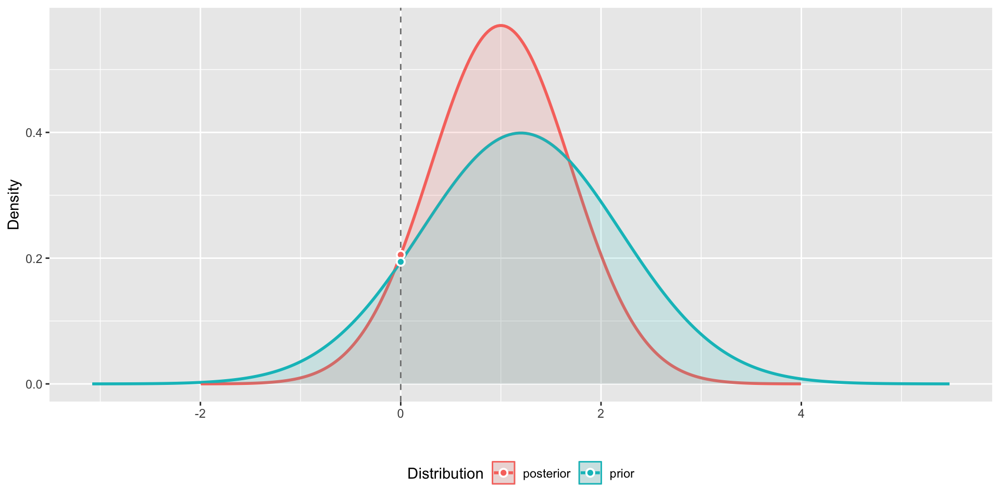
Savage–Dickey
This method is called the Savage–Dickey density ratio: the posterior density at the null value divided by the prior density there (or its inverse for BF10). It looks only at the height of the two curves at one point.
That’s good in that it parallels NHST’s point null. It’s bad in that it says little about the rest of the posterior: where most of it sits, or how wide it is.
With a brms model
Easy to implement with brms models. You need sample_prior = "yes" so brms saves draws from the prior.
mr.2 <-
brm(family = gaussian,
happiness ~ 1 + SS_c + FQ_c,
prior = c(prior(normal(5, 2), class = Intercept),
prior(normal(0, .2), class = b, coef = SS_c),
prior(normal(0, .2), class = b, coef = FQ_c),
prior(exponential(.5), class = sigma)),
iter = 2000, warmup = 1000, chains = 2, cores = 2,
data = MR,
sample_prior = "yes",
file = "mr.2")mr.2 summary
Family: gaussian
Links: mu = identity
Formula: happiness ~ 1 + SS_c + FQ_c
Data: MR (Number of observations: 118)
Draws: 2 chains, each with iter = 2000; warmup = 1000; thin = 1;
total post-warmup draws = 2000
Regression Coefficients:
Estimate Est.Error l-95% CI u-95% CI Rhat Bulk_ESS Tail_ESS
Intercept 5.21 0.15 4.92 5.51 1.00 1970 1272
SS_c 0.35 0.05 0.24 0.45 1.00 1933 1127
FQ_c 0.18 0.07 0.04 0.31 1.00 1861 1530
Further Distributional Parameters:
Estimate Est.Error l-95% CI u-95% CI Rhat Bulk_ESS Tail_ESS
sigma 1.60 0.11 1.40 1.81 1.00 2119 1474
Draws were sampled using sample(hmc). For each parameter, Bulk_ESS
and Tail_ESS are effective sample size measures, and Rhat is the potential
scale reduction factor on split chains (at convergence, Rhat = 1).BFs for mr.2
Plotting the BFs
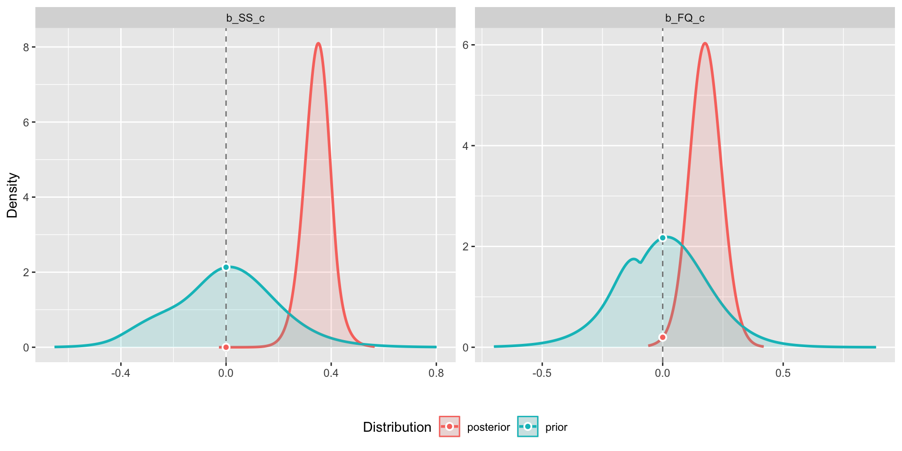
Try with wider priors
Code
mr.2b <-
brm(family = gaussian,
happiness ~ 1 + SS_c + FQ_c,
prior = c(prior(normal(5, 2), class = Intercept),
prior(normal(0, 10), class = b, coef = SS_c),
prior(normal(0, 10), class = b, coef = FQ_c),
prior(exponential(.5), class = sigma)),
iter = 2000, warmup = 1000, chains = 2, cores = 2,
data = MR,
backend = "cmdstanr",
file = "mr.2b")BFs with wider priors
We can also do this with a ROPE!
BF against an interval null
The Bayes factor represents the degree by which the distribution mass of the posterior has shifted outside or inside the null interval relative to the prior distribution.
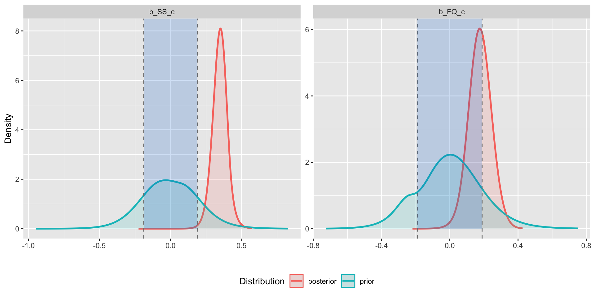
Shortcomings of Bayes Factors
Heavy reliance on priors. The marginal likelihood is an average taken over the prior, so Bayes factors can be seen as relatively subjective
BF provide differences between models without quantifying whether the chosen model is any good (similar issues with waic, loo, p-values)
Favors more parsimonious models and thus is more conservative (could also be a pro)
Shortcomings of Bayes Factors (cont.)
Potentially reinforces dichotomous thinking (better than p values but not by much)
May be used as a measure of effect size (similar shortfalls to using p as such)
Can be completely disconnected from our typical estimation stats
Same model, two priors
Code
info.1 <-
brm(family = gaussian,
happiness ~ 1 + SS_c + FQ_c,
prior = c(prior(normal(5, 2), class = Intercept),
prior(normal(0, 2), class = b, coef = SS_c),
prior(normal(0, 2), class = b, coef = FQ_c),
prior(exponential(1), class = sigma)),
iter = 2000, warmup = 1000, chains = 2, cores = 2,
data = MR,
sample_prior = "yes",
save_pars = save_pars(all = TRUE),
backend = "cmdstanr",
file = "info.1")Code
info.2 <-
brm(family = gaussian,
happiness ~ 1 + SS_c + FQ_c,
prior = c(prior(normal(5, 2), class = Intercept),
prior(normal(0, .2), class = b, coef = SS_c),
prior(normal(0, .2), class = b, coef = FQ_c),
prior(exponential(.5), class = sigma)),
iter = 2000, warmup = 1000, chains = 2, cores = 2,
data = MR,
sample_prior = "yes",
save_pars = save_pars(all = TRUE),
backend = "cmdstanr",
file = "info.2")Their Bayes factors
Bayes Factor (Savage-Dickey density ratio)
Parameter | BF
----------------------
(Intercept) | 1.49e+34
SS_c | 3.58e+04
FQ_c | 4.98
* Evidence Against The Null: 0BF plot: wide prior (info.1)
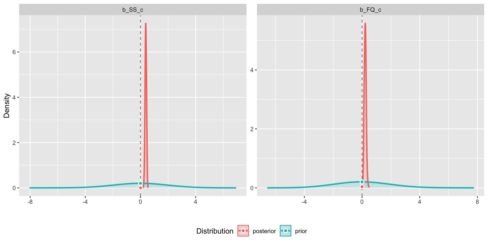
BF plot: narrow prior (info.2)
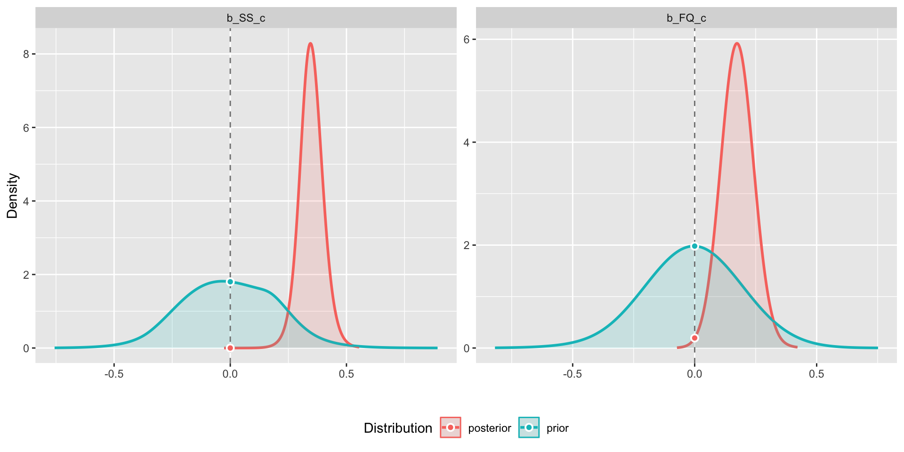
Same effects, different BFs
The posteriors barely move (the narrow prior shrinks them a little toward 0), but the BFs change a lot.
Code
bind_rows(`wide prior: Normal(0, 2)` = spread_draws(info.1, b_SS_c, b_FQ_c),
`narrow prior: Normal(0, 0.2)` = spread_draws(info.2, b_SS_c, b_FQ_c),
.id = "prior") %>%
pivot_longer(c(b_SS_c, b_FQ_c), names_to = "parameter") %>%
mutate(parameter = if_else(parameter == "b_SS_c", "School success slope", "Friendship quality slope")) %>%
ggplot(aes(x = value, y = parameter, fill = prior)) +
stat_halfeye(alpha = .6, .width = .95, position = position_dodge(width = .3)) +
geom_vline(xintercept = 0, linetype = "dashed") +
labs(x = "Slope (happiness points per unit)", y = NULL, fill = NULL) +
theme_classic(base_size = 14) +
theme(legend.position = "top")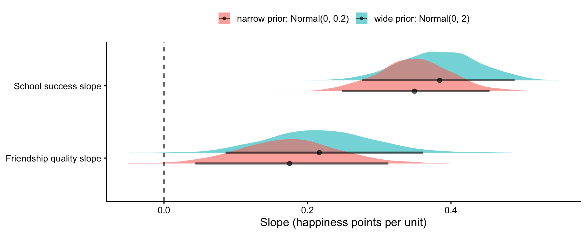
Why?
Code
| parameter | BF, wide prior | BF, narrow prior |
|---|---|---|
| School success | 35786.8 | 24118.5 |
| Friendship quality | 5.0 | 10.2 |
- The BF compares “the effect is 0” to “the effect is something like the prior says.” A wide prior spreads its bets over huge slopes the data rule out, so it makes the alternative look worse.
- For friendship quality, just narrowing the prior more than doubles the BF (4.6 → 11): “moderate” becomes “strong” with the same data. School success is so far from 0 that any prior gives an enormous BF (the numbers move, the conclusion doesn’t).
- The posterior (and so CIs, pd and ROPE) hardly cares about the prior here. The BF cares a lot. Always report the prior along with a BF.
Which tool answers which question?
| Question | Tool | Prior matters? |
|---|---|---|
| What is the effect, and how uncertain? | Median + 95% interval, plotted | A little |
| Which model predicts new data best? | loo_compare() + Pareto k |
A little |
| Variance explained in this sample? | Bayesian \(R^2\) | A little |
| How sure of the direction? | pd, p_direction() |
A little |
| Big enough to matter? | ROPE, rope() |
A little |
| “Exactly 0” vs. “like my prior”? | BF, bayesfactor_parameters() |
A lot |
What to report
- Always: the posterior estimate with a 95% interval, in the units of the outcome, and a figure. This is the main result; the rest are summaries of it.
- If you compare models: elpd_diff and se_diff from
loo_compare(), and that all Pareto k < 0.7. - If you make a claim about one parameter: pd and/or % in a ROPE, with the reason for the ROPE.
- If you report a BF: the prior it depends on, and ideally how it changes with a wider or narrower prior.
An example Results sentence
“Students in the treatment group were somewhat happier at average school success (b = 0.36 points on the 1–10 scale, 95% CI [−0.21, 0.92]; pd = 89%), but 27% of the posterior fell inside our ROPE of ±0.2 points, so the data can’t yet tell a small benefit from none.”
Multiple comparisons
Kruschke:
When comparing multiple conditions, a key goal in NHST is to keep the overall false alarm rate down to a desired maximum such as 5%. Abiding by this constraint depends on the number of comparisons that are to be made, which in turn depends on the intentions of the experimenter. In a Bayesian analysis, however, there is just one posterior distribution over the parameters that describe the conditions. That posterior distribution is unaffected by the intentions of the experimenter, and the posterior distribution can be examined from multiple perspectives however is suggested by insight and curiosity